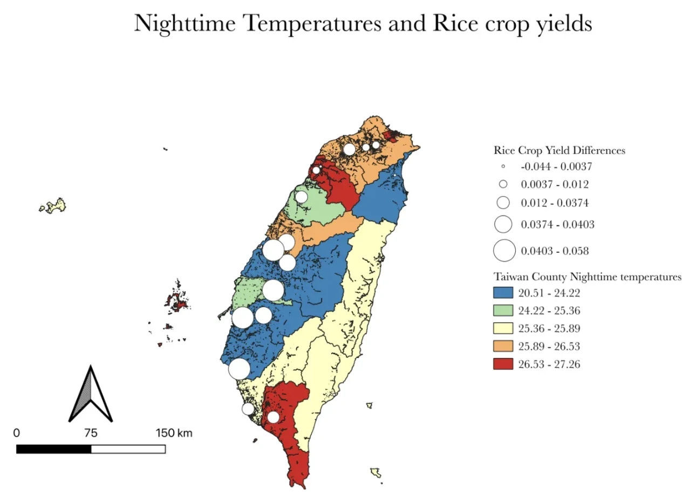
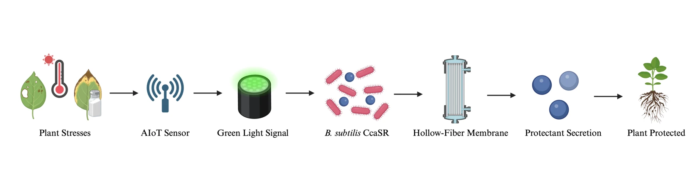
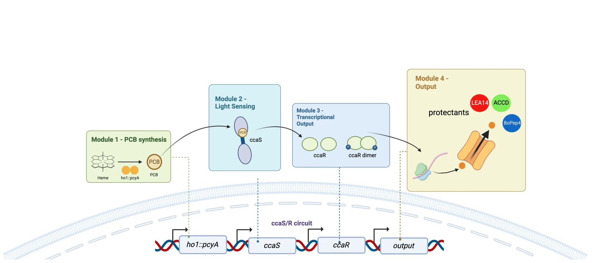
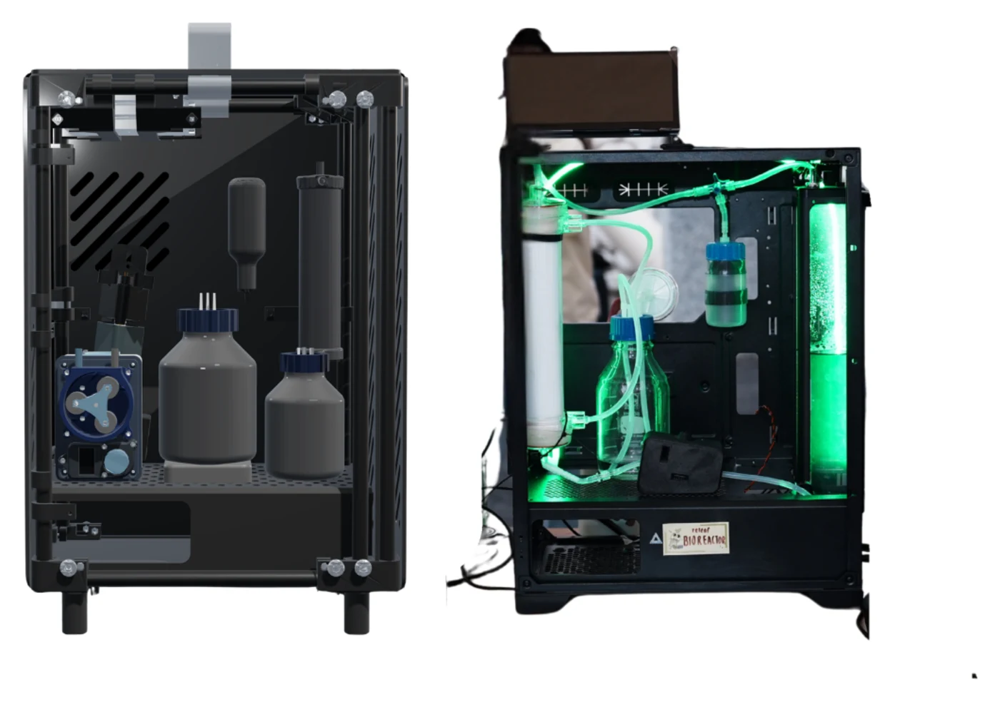
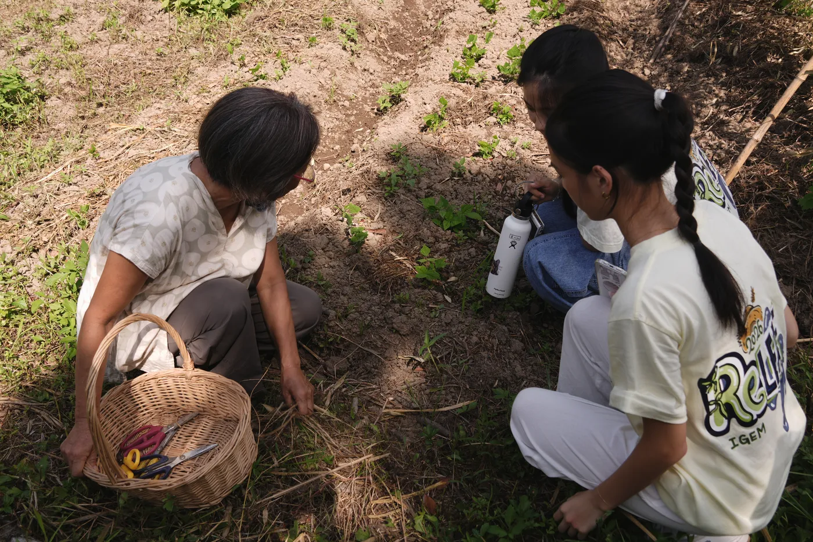
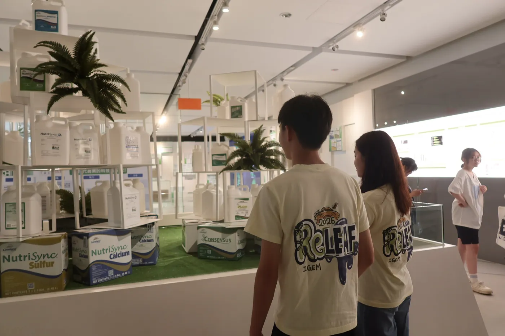
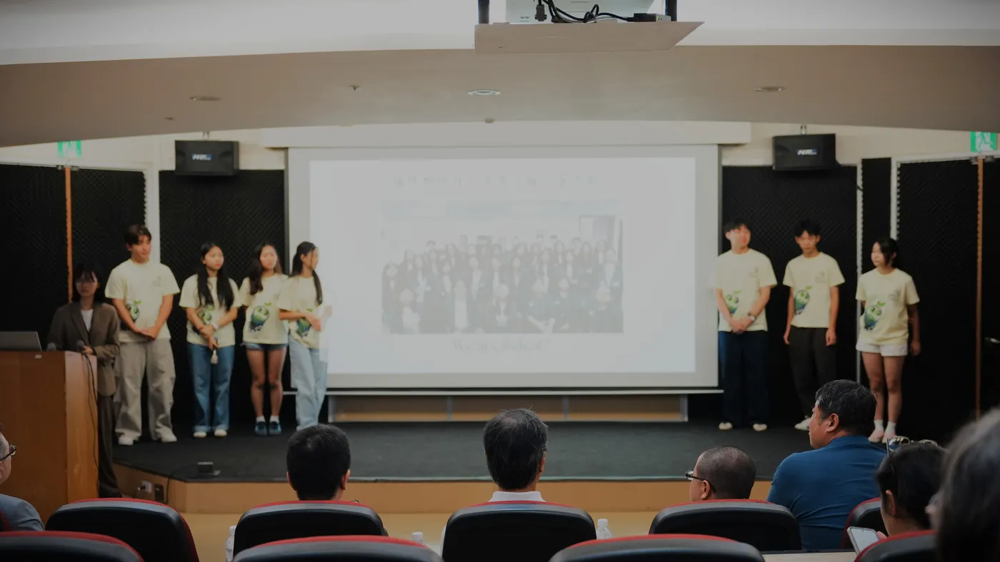
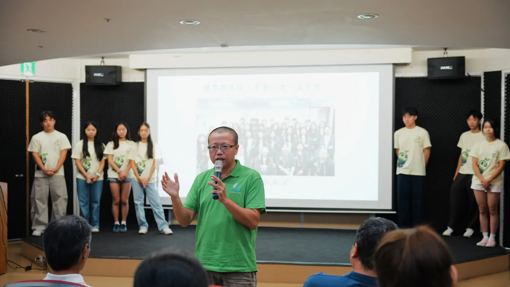
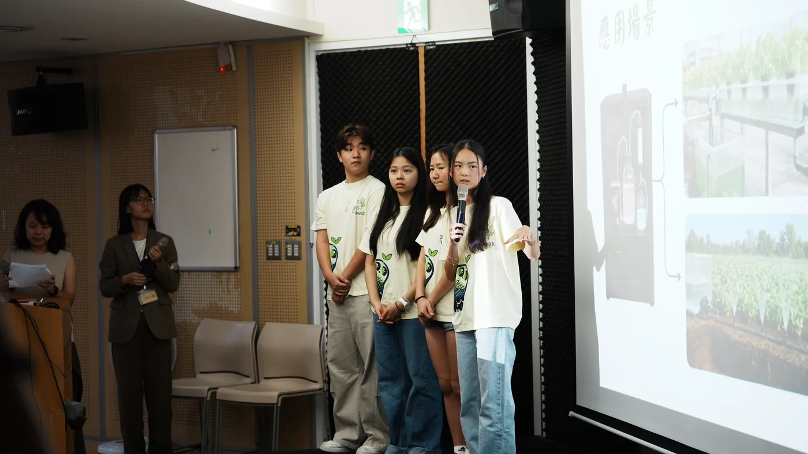
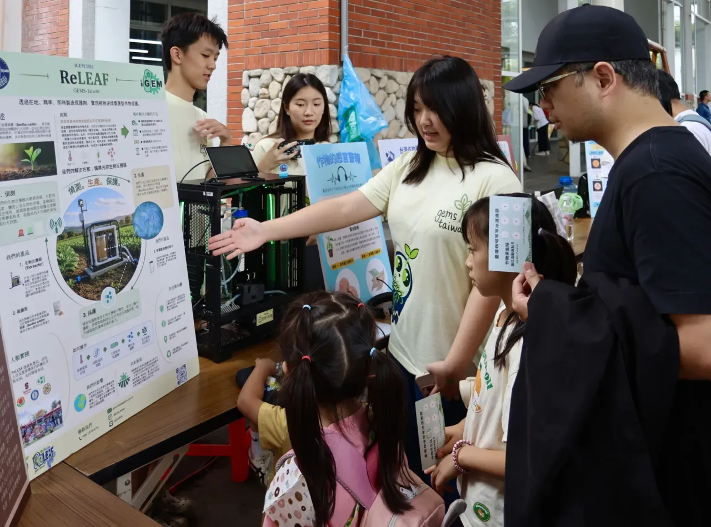

Abstract
Heat and salinity increasingly threaten agricultural productivity, and the biological protectants that could shield a crop through them remain difficult to manufacture, store and deliver affordably.
ReLeaf detects environmental stress through electronic sensors and activates engineered Bacillus subtilis using green light. The bacteria produce plant-protective molecules inside a hollow-fiber bioreactor, which releases the protectants while retaining the engineered cells. The result is a contained and responsive system designed to make plant protection more accessible to small-scale farmers.
The rest of this page is the argument for that design: the conditions we measured, the gap we found between a protectant that works in a paper and one that reaches a two-hectare farm, the advice that changed the project, and the system we built in response.
The challenge
Climate stress
Climate change is placing increasing pressure on agriculture. Rising temperatures, soil salinization, drought and disease all reduce what a field yields, and they rarely arrive one at a time. To understand how those pressures are distributed where we live, we mapped environmental and agricultural data across Taiwan.

Temperature, salinity and climate volatility vary considerably between regions, and sometimes between plots a few kilometres apart. A farmer does not experience a national average. They experience the week their own field crossed a damaging threshold. Climate stress arrives locally, so a solution to it has to work locally too.
Gaps in biological solutions
Biofertilizers, biostimulants and bioprotectants are promising alternatives to conventional agrochemicals, and the science behind them is no longer in doubt. Delivery is. These products are typically manufactured at centralized facilities, purified and formulated for stability, transported to farms, and stored under controlled conditions until they are used. Each step adds time and cost to a product whose value per hectare is modest to begin with, and at the end of it the farmer still has to judge when to apply what they bought.
Where it matters
Large commercial farms can absorb this. They have the capital, the specialized equipment and the labour to monitor a crop, store a biological product correctly and apply it on schedule. Small-scale farmers usually have none of the three. The farms most exposed to localized climate stress are therefore the ones facing the highest barrier to the protection that would answer it, and that mismatch is the problem ReLeaf was built for.
Project inspiration
Our original design used engineered bacteria to do everything. They would sense plant stress themselves and release protectants directly into the soil. It was a tidy idea, and it did not survive contact with the people who build these systems for a living.
Consultations with professors and bioprocess experts raised three problems we had underestimated: biological sensing is slow and hard to calibrate against a moving environmental threshold, deliberate environmental release of an engineered organism is a regulatory and ethical wall rather than a hurdle, and a system with no control layer cannot be stopped once it is wrong. Their feedback pushed us to replace bacterial sensing with electronic sensors and an AIoT model that predicts plant stress, and to design a hollow-fiber bioreactor that lets the protectant out while keeping the bacteria in. Almost every part of the current design descends from that redirection, which is why the engagement record is not an appendix to this project. It is the reason the project looks the way it does.
Our solution
ReLeaf is a compact bioreactor that sits at the edge of a field and produces crop protectant on site, on the day it is needed. It runs in three stages, and the whole point of the arrangement is that no step of it waits for a person to notice something.

Sensing and prediction
Electronic sensors monitor field conditions continuously, including temperature and salinity. Our AIoT model reads those data, predicts plant stress from the conditions that cause it, and turns on a green light signal when the field crosses a damaging threshold. The prediction is what matters here. A farmer reading a plant for symptoms is already late, because visible wilting and chlorosis follow the physiological damage by days. The sensor and hardware stack is on the Hardware page, and the model and its validation protocol are on the Software page.
Light-activated production
Green light activates the CcaS/CcaR optogenetic system in engineered Bacillus subtilis, which drives expression of one of three protectants: ACC deaminase, LEA14 or BoPep4. Light is the control layer the bacteria were never going to provide on their own. It is external, it is reversible, and it can be turned off by the controller in the time it takes to cut power to an LED.

The three protectants are not interchangeable. Each one intercepts a different mechanism by which heat or salt damages a plant, which is what makes the output module worth keeping modular.
| Protectant | Stress it meets | Intended mechanism |
|---|---|---|
| ACC deaminase | Heat, salinity, general abiotic stress | Cleaves ACC, the immediate precursor of ethylene, so the stress-ethylene surge that triggers senescence, chlorosis and growth arrest is blunted before the plant starts shutting itself down. |
| LEA14 | Osmotic stress and water loss | A late embryogenesis abundant protein. Its intrinsically disordered structure lets it wrap around membranes and other proteins as cellular water is lost, preventing the aggregation and denaturation that follow. |
| BoPep4 | Salinity | Improves Na+/K+ homeostasis, strengthens ABA-mediated responses, increases leaf wax and cutin deposition, and raises antioxidant defences. The structural modelling behind it is on the Peptide Design page. |
Containment and delivery
The engineered bacteria stay inside a hollow-fiber membrane bioreactor. The membrane passes the secreted protectant into the delivery pathway and retains the cells, so what leaves the unit is filtered protectant and what stays in it is the organism. Farmers told us their organic classification was not negotiable, and the membrane is our answer to that as much as it is a biosafety measure.

The released protectant is delivered to the plants through hydroponic circulation or soil irrigation, whichever the farm already runs. That is the last piece of the design: ReLeaf provides localized protection when stress is predicted, without ever putting an engineered organism into the soil, the crop or the water table.
Integrated Human Practices
Input from farmers, researchers, industry experts and community members shaped this project continuously, and in the case of the sensing layer it rebuilt it.
We visited local farms to understand how farmers recognize plant stress, manage their crops and decide when to intervene. What came back was consistent: a system they would actually use has to be automated, accessible and compatible with the way they already work. A device that needs a laptop and a trained operator is a device that sits in a shed.
We visited a hydroponic farm and consulted a plant-protectant company to understand existing delivery systems and the barriers biological products face outside the laboratory. Their input shaped how ReLeaf connects to hydroponic circulation and irrigation, and it is the reason we treat the delivery line as part of the design instead of an afterthought.


We then hosted a public forum that brought farmers, company representatives and community members into one room to exchange perspectives and examine our bioreactor directly. Those conversations are the ones that refined ReLeaf’s accessibility, its safety case and its real-world application.




The full record of who we met, what they said and what changed because of it is on the Integrated Human Practices page. The public forum and the exhibits built for it also have their own pages: Data Physicalization for the stress map and the sound of a plant under drought, and Education for the workshops.
Vision and impact
ReLeaf changes where plant protection is made. Producing protectants locally and on demand could reduce a farm’s dependence on centralized manufacturing, long-distance transport and specialized storage, which are the three costs that currently decide whether a biological product is worth buying at all.
The architecture generalizes. A contained secreting chassis, a selective membrane and an autonomous environmental trigger will carry any protein-based agricultural treatment, so the same unit could be retasked to a stress we have not worked on. That is the part we would hand to another team.
Industrial protectant manufacturing serves the farms that can afford to operate at scale, while the smallholdings that feed a large share of the world are held out by cost. ReLeaf aims to close that gap by moving production to the field, and to make precise biological protection safer, more responsive and more accessible to the farmers who are currently underserved by it. Where that leads commercially is on the Sustainability page, and what it would take to sell such a device legally is on the Laws and Regulations page.
Where the detail lives
- EngineeringEvery design, build, test and learn cycle, including the ones that failed.
- PlantsAgar, hydroponics and soil: how we stress a plant and what we can measure.
- Bioreactor CalculationsMembrane sizing, flux, pump floor and the transport arithmetic behind the containment stage.
- HardwareThe sensors, the enclosure and the build of the unit in Figure 4.
- SoftwareThe AIoT stress model and the protocol that validates the digital twin.
- Peptide DesignThe structural modelling behind BoPep4, and what the audit retracted.
- Geospatial AnalysisThe surfaces behind Figure 1, their sources and the counties with no data.
- Integrated Human PracticesEvery engagement, in order, and what each one changed.